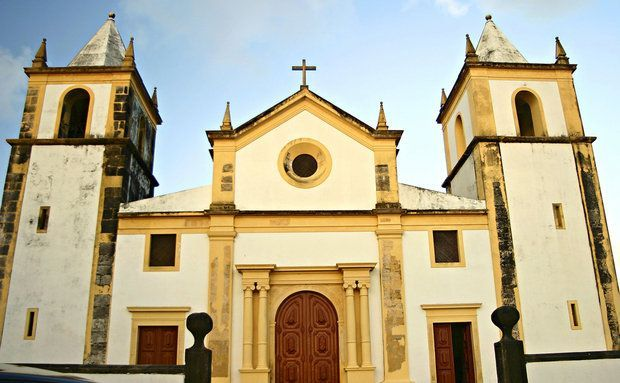

Pontos Turísticos do Recife Antigo
Igreja da Sé
A Igreja da Sé é um marco histórico no Recife Antigo. Ela foi construída no século XVIII e apresenta uma arquitetura deslumbrante com influências barrocas. A igreja é conhecida por suas belas obras de arte e é um local de grande importância religiosa e cultural na cidade.
Paço do Frevo
O Paço do Frevo é um espaço dedicado à preservação e divulgação do frevo, um dos estilos musicais e de dança mais tradicionais de Pernambuco. Os visitantes podem aprender sobre a história do frevo, assistir a apresentações ao vivo e até mesmo participar de aulas de dança. É uma experiência única para quem deseja conhecer a cultura pernambucana.